Обзор утилизаторов (подборщиков) рассеянной энергии окружающей среды
1. Введение
Миниатюризация и существенное удешевление производства различных электронных устройств привели к их широкому и повсеместному использованию в различных сферах человеческой деятельности (экономика, военное дело, здравоохранение, охрана окружающей среды, безопасность, быт и т. д.) в разнообразном качестве, причем количество применений неуклонно растет со временем. Это могут быть всевозможные датчики, размещаемые в промышленном оборудовании, на транспорте, в зданиях и сооружениях, охранные системы, сети датчиков мониторинга окружающей среды, биосенсоры, электронные метки (RFID - Radio Frequency Identification) [5]. В качестве основы могут служить беспроводные сети стандартов IEEE 802.11, IEEE 802.15.1, IEEE 802.15.4, представленные, в частности, коммуникационными системами на основе протоколов Wi-Fi, Bluetooth или ZigBee, а также стандарта IEEE 802.15.6 для обработки сигналов имплантированных или размещенных на человеческом теле сенсоров [3 - 5]. Концепция Smart Dust [20] предполагает изучение возможности упаковки сетевых устройств с оптической связью в объем, не превышающий 1 мм3, и их дальнейшего повсеместного размещения в окружающей среде с помощью беспилотных дронов или артиллерии. В большинстве случаев необходимым является автономный режим работы (для беспроводных систем или биосенсоров), следствием чего является проблема выбора источника питания. Прогресс в энергопотреблении электронных устройств, содержащих минимальное количество сверхбольших интегральных микросхем (одну - две), достиг уровня микроватт. Конечно, при таком уровне энергопотребления традиционные химические батареи, которые в основном и применяются в настоящее время для питания узлов беспроводных систем, могут работать в течение достаточно длительного времени, иногда совпадающего со сроком службы устройств (например, 5 лет для литиевых батарей [17]). Но, тем не менее, во многих случаях батареи приходится периодически заменять или подзаряжать, что при огромном количестве обслуживаемых устройств весьма трудозатратно и требует серьезных дополнительных расходов, иногда оказывающихся непомерными. Кроме того, в ряде применений, например, при имплантации, замена батарей может быть затруднена или вообще невозможна. Следует также заметить, что прогресс в миниатюризации электроники не коснулся в той же мере химических источников тока, и они по своим размерам могут значительно превосходить электронную часть запитываемого беспроводного устройства. В то же время в окружающей среде имеется достаточное количество различных форм энергии, которую можно утилизировать, чтобы обеспечить работоспособность устройств микроваттного уровня энергопотребления. Эта рассеянная энергия может быть естественного происхождения (солнечная энергия, энергия ветра, энергия волн на воде) или искусственного (транспортный трафик, вибрации оборудования и строений, различные движения человеческого тела и даже пульсации при кровообращении, радиоволны и электромагнитные колебания вблизи линий электропередач, источники тепла). Несмотря на то, что уровни доступной рассеянной энергии невелики (см. табл. 1.1), в сочетании с малым энергопотреблением устройств и их возможностью работать в дежурном режиме (спящий режиме с экономией энергопотребления с кратковременным переходом в активный режим), ее утилизация и запасание в накопителе (конденсатор достаточно большой емкости или перезаряжаемая батарея) во многих случаях позволяет решить проблему источника питания. В качестве примера можно привести электронный калькулятор, ранее требовавший для питания химические источники тока или электрическую сеть, но со временем обретший способность работать от солнечной батареи при искусственном освещении.
Таблица 1.1. Примерные сравнительные характеристики некоторых утилизаторов рассеянной энергии [4].
|
Тип утилизатора энергии |
Мощность в расчете на единицу площади или объема | Примерное выходное напряжение | Рабочие условия | Преимущества | Недостатки |
| Солнечные батареи | до 100 мВт/см2 на улице, 100 мкВт/см2 в помещении | 0.5 В и более | Внешнее освещение | Высокая мощность в расчете на единицу площади, хорошо отработанная технология изготовления и применения | Высокая зависимость выходной мощности от уровня освещения, прерывистый режим работы |
| Пьезоэлектрические утилизаторы энергии механических вибраций | 10 ... 200 мкВт/см3 | 10 ... 20 В и более | Внешние вибрации в диапазоне единиц герц - десятков килогерц | Высокое выходное напряжение, хорошо отработанная достаточно простая технология, возможность изготовления по технологиям микроэлектромеханических систем (МЭМС) | Высокое внутреннее сопротивление, сильная зависимость выходного напряжения от уровня вибраций |
| Электромагнитные утилизаторы энергии механических вибраций | 1 ... 2 мкВт/см3 | сотни милливольт | Внешние вибрации в диапазоне единиц - сотен герц | Хорошо отработанная технология изготовления | Низкая выходная мощность на единицу объема, низкое выходное напряжение, занимают большой объем |
| Утилизаторы энергии электромагнитных колебаний (радиоволн) | 0.0002 ... 1 мкВт/см2 | десятки милливольт - единицы вольт | Близость к источникам излучения | Широкое распространение источников излучения, регулярное присутствие сигнала, возможность использования встроенных антенн | Большая зависимость выходной мощности от расстояния до источника |
| Утилизаторы тепловой энергии | 50 ... 100 мкВт/см2 на 0C | 10 ... 100 мВ | Поверхности с перепадом температур | Достаточно высокое постоянство выходной мощности во времени | Низкое выходное напряжение, необходимость наличия перепада температур |
Область энергогенерации, занимаемая утилизаторами рассеянной энергии, вообще говоря, не ограничивается малыми мощностями. Помимо используемых для питания микроэлектронных устройств миниатюрных утилизаторов энергии с выходной мощностью микроватты - ватты, возможно построение утилизаторов энергии больших размеров с выходной мощностью в киловатты - мегаватты для обеспечения производств и жизнедеятельности. Мощные ветряные станции и солнечные фермы мегаваттного уровня тоже могут рассматриваться как утилизаторы рассеянной энергии.
История утилизаторов энергии восходит к восемнадцатому веку, когда было запатентовано устройство для подзавода механических карманных часов во время ходьбы [5]. В двадцатом веке подобные устройства нашли широкое применение уже в наручных часах. Также в качестве курьезного примера использования утилизатора энергии можно привести историческую байку о насосе Эдисона, приводимом в действие при открывании калитки его дома посетителями. Ну, и длительные бесплодные попытки сконструировать вечный двигатель [7] с некоторой натяжкой тоже относятся к этому направлению. Утилизаторы рассеянной энергии (energy harvesters, energy scavengers) малой и средней мощности вряд ли могут рассматриваться как составная часть энергетики, так как с экономической точки зрения производство энергии подобным способом неэффективно [33]. Скорее, они являются некоторым ее паразитическим ответвлением, зачастую функционирующем за счет неизбежных потерь в генерирующих энергетических мощностях и системах передачи энергии, а их удобство заключается в том, что они позволяют внедрять автономные электронные устройства, не требующие регулярной заботы об источнике их питания.
2. Примеры утилизаторов энергии
2.1. Утилизаторы энергии естественного или искусственного света
Световая энергия может быть напрямую преобразована в электрическую при помощи солнечных элементов и батарей, ставших в последнее время весьма недорогими и легкодоступными в разных форматах. Хотя поток световой энергии Солнца на поверхности Земли в солнечный полдень порой достигает примерно 1 кВт/м2 (100 мВт/см2), величина доступной энергии при ее преобразовании может изменяться от 100 мкВт/см2 внутри помещения до 7500 мкВт/см2 и более снаружи [5]. Уровни энергии искусственного освещения, как правило, существенно ниже, а его спектр может сильно отличаться от спектра солнечного света, на который, как правило, ориентируются разработчики солнечных батарей. Световая энергия Солнца доступна только в дневное время, причем она может существенно зависеть от погодных условий, поэтому, чтобы обеспечить работу электронных приборов при ее отсутствии, например, ночью или в пасмурный день, необходимы запасающие электрическую энергию устройства (аккумуляторные батареи или суперконденсаторы). То же самое можно сказать об искусственном освещении, которое также редко бывает постоянным. Соответственно, с запасом должна быть выбрана и мощность солнечной батареи. Для питания современных однокристальных микропроцессорных устройств с приемопередатчиками достаточно солнечной батареи примерно такой же площади, как и кристалл микросхемы, соответственно, разумным подходом выглядит их интеграция в одно устройство [21]. Очевидными примерами применения утилизаторов световой энергии в быту могут служить садовые светодиодные светильники, накапливающие энергию солнечного света в дневное время в аккумуляторной батарее, а затем отдающие ее при наступлении темноты (искусственное освещение), а также электронные калькуляторы и часы с солнечными батареями [7].
Важными особенностями утилизаторов энергии на солнечных батареях являются возможность масштабирования (от микроватт до мегаватт и более) и относительная простота конструкции системы в целом по сравнению с другими источниками энергии (особенно для случая большой генерируемой мощности).
Простейшая схема построения утилизатора на солнечной батарее показана на рис. 2.1.1 и включает в себя солнечную батарею PV1, защитный диод VD1, аккумулятор B1. Когда солнечная батарея освещена, генерируемый ею электрический ток проходит через диод, заряжая аккумулятор. При затемнении диод препятствует разрядке аккумулятора через солнечную батарею. Несмотря на существенные недостатки (падение напряжения на защитном диоде, отсутствие контроля заряда аккумуляторной батареи, несогласованность солнечной батареи с нагрузкой), простота и дешевизна схемы обеспечивает ей свою нишу применения.
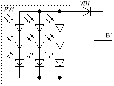
Рис. 2.1.1. Электрическая принципиальная схема утилизатора световой энергии на солнечной батарее с защитным диодом: PV1 - солнечная батарея, VD1 - защитный диод, B1 - аккумуляторная батарея.
В более совершенных системах устанавливается контроллер заряда аккумуляторной батареи, позволяющий не допускать перезаряда, регулирующий ток заряда и обеспечивающий непрерывную подзарядку. Для оптимального согласования солнечной батареи с нагрузкой, в частности, по критерию максимального отбора мощности, может использоваться входной преобразователь напряжения DC-DC типа (постоянное напряжение в постоянное). Для того, чтобы обеспечить требуемый уровень напряжения на нагрузке, независимо от уровня зарядки аккумуляторной батареи, необходим также выходной преобразователь напряжения DC-DC. Возможный принцип построения такой схемы показан на рис. 2.1.2, а один из вариантов ее реализация на специализированной микросхеме MAX20361 - на рис. 2.1.3.
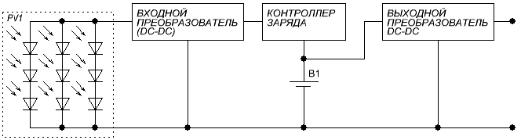
Рис. 2.1.2. Электрическая принципиальная схема утилизатора световой энергии на солнечной батарее с преобразователями напряжения и контроллером заряда аккумуляторной батареи: PV1 - солнечная батарея, B1 - аккумуляторная батарея.
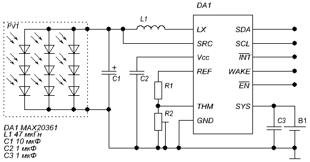
Рис. 2.1.3. Электрическая принципиальная схема утилизатора световой энергии на солнечной батарее и микросхеме MAX20361.
Алгоритмы нахождения точки максимальной мощности, отдаваемой солнечной батареей, могут быть достаточно сложными, особенно с учетом частичного перекрытия солнечных батарей тенью от облаков и сооружений [4].
2.2. Утилизаторы энергии механических вибраций
Промышленное оборудование, бытовая техника, транспортные средства, сооружения, человеческое тело способны производить механические вибрации в широком диапазоне частот [17]. Наибольшее количество источников вибраций попадает в диапазон частот 60 ... 200 Гц с амплитудными значениями ускорений 1 ... 10 м/с2 [16]. Их кинетическая энергия, сосредоточенная в основном в низкочастотном диапазоне, может быть достаточно простыми средствами преобразована в электрическую. Соответственно, утилизаторы энергии вибрационного типа конструируются, как правило, в расчете на использование имеющих наибольшую энергетическую составляющую низкочастотных вибраций в диапазоне примерно до 100 ... 200 Гц. Конструктивно данный тип устройств представляет из себя состоящий из инертной массы, возвратной пружины и демпфера колебательный контур, имеющий амплитудно-частотную характеристику второго порядка с одной или несколькими резонансными частотами, которые должны соответствовать частотному диапазону исходных колебаний для увеличения снимаемой электрической мощности, обычно составляющей порядка 100 мкВт в расчете на каждый 1 см3 объема устройства [5]. Вибрационные утилизаторы энергии представлены в основном тремя типами - пьезоэлектрические, электростатические и электромагнитные [3, 17]. Они могут генерировать электрическую энергию в диапазонах нановатт - микроватт - несколько милливатт. Ранее такие уровни энергии не имели практического смысла, но постоянный прогресс в развитии электронных устройств делает их все более привлекательными. В частности, может быть утилизирована и использована даже энергия низкочастотного акустического шума с помощью микрофона.
Обобщенная схема утилизатора энергии механических вибраций представлена на рис. 2.2.1[5].
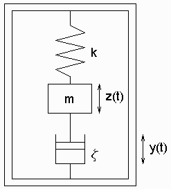
Рис. 2.2.1. Схема утилизатора энергии механических вибраций. Груз массой m, способный совершать колебания z(t), пружина с коэффициентом жесткости k, демпфер с суммарным коэффициентом демпфирования z размещены на станине, совершающей колебания y(t).
Груз массой m подвешен на пружине с коэффициентом жесткости k, прикрепленной к станине, которая, в свою очередь, совершает колебания по гармоническому закону с амплитудой y0 и циклической частотой w:
Потери энергии в преобразователе могут быть представлены в виде демпфера с коэффициентом демпфирования z, равным сумме коэффициента демпфирования безвозвратных потерь zP и коэффициента демпфирования преобразователя энергии механических колебаний в электрическую zE:
Уравнение движения груза массой m:
Решение этого уравнения для случая установившихся колебаний:
где фазовый сдвиг f находится по формуле:
Амплитуда колебаний z0, определяемая выражением:
достигает максимума на частоте собственных колебаний w0:
Суммарная мощность P, рассеиваемая за счет демпфирования, определяется формулой:
где x - коэффициент затухания:
На частоте резонанса эта мощность достигает максимума:
С учетом взаимосвязи между амплитудой колебаний y0 и амплитудой ускорения a0:
получаем:
Для электрической мощности PE, вводя коэффициенты затухания, связанные с безвозвратными потерями xP и отбором электрической мощности xE можно записать:
Электрическая мощность растет пропорционально колеблющейся массе m, квадрату ускорения и обратно пропорционально частоте колебаний. Соответственно, исходя из этого, следует выбирать рабочую частоту вибрационного утилизатора энергии, обычно - самый низкочастотный пик колебаний с максимальной амплитудой ускорения [16]. Электрическая мощность достигает максимума, когда xP = xE. Для увеличения выходной мощности утилизатора энергии, который должен работать в некотором частотном диапазоне, может применяться настройка его резонансного контура на заданную частоту различными методами, в частности, в пьезоэлектрическом утилизаторе для этого удобно подстраивать коэффициент демпфирования подключенной электрической цепи за счет изменения ее нагрузочной характеристики.
В пьезоэлектрических утилизаторах энергии используется генерация электрических зарядов материалом, обладающим пьезоэлектрическими свойствами, при механическом воздействии. В качестве пьезоэлектрических материалов могут применяться, например, цирконат-титанат свинца (Pb(ZrXTi1-X)O3) , титанат бария (BaTiO3), ниобат лития (LiNbO3), поливинилиденфторид (фторопласт-2, -(C2H2F2)n-). Пьезоэлектрические утилизаторы могут быть выполнены в виде мембран или консолей. Возможная схема построения утилизатора резонансного типа показана на рис. 2.2.2.
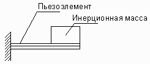
Рис. 2.2.2. Пьезоэлектрический утилизатор энергии. Пьезоэлемент выполняет одновременно роль возвратной пружины, обеспечивая резонансный характер работы устройства.
Если желательно обеспечить работу пьезоэлектрического утилизатора в широкой полосе частот, то может быть применена схема ударного типа (рис. 2.2.3), в которой резонансные колебания пьезоэлементов возбуждаются за счет ударного воздействия маятника, переходящего скачком из одного крайнего положения в другое при превышении инерционной силой некоторого порога упругости элемента подвески.
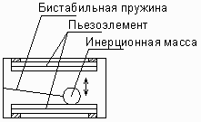
Рис. 2.2.3. Пьезоэлектрический утилизатор энергии ударного типа. Маятник, закрепленный на бистабильном упругом подвесе, под воздействием силы инерции скачком переходит из одного положения в другое, ударяя по пьезоэлементу.
Отличительными свойствами пьезоэлектрических утилизаторов являются высокое выходное напряжение, высокое внутреннее сопротивление, низкий выходной ток. Увеличить выходную мощность можно либо за счет увеличения толщины пьезоэлемента, либо за счет использования многослойной структуры. Пьезоэлектрические утилизаторы обладают простотой геометрии, отсутствием лишних деталей (прямое преобразование энергии механических колебаний в электрическую), могут массово и дешево производиться по технологиям микроэлектромеханических систем (МЭМС, MEMS - microelectromechanical systems), зачастую на одной подложке с запитываемым устройством, а также методами офсетной печати или прямой печати на струйном принтере [2]. В качестве утилизаторов энергии, в частности, могут использоваться пьезоэлектрические датчики давления, одновременно выполняя свою основную функцию. А пьезоэлектрические микрофоны, в принципе, позволяют иметь дополнительную возможность сбора и использования энергии акустических волн.
В некоторых применениях помимо внешних вибраций колебания пьезоэлемента могут активироваться с помощью источника b-излучения, которое наводит на служащую электродом конденсатора пружинную пластину заряд, заставляющий ее изгибаться за счет электростатического взаимодействия [13]. Когда пластина коснется другого электрода, происходит разряд и возврат пластины в исходное положение. Нанесенный на пластину пьезоэлектрик вырабатывает при колебаниях пластины электрическую энергию. Данный принцип положен в основу некоторых разновидностей так называемых "атомных батареек". Характеристики ряда возможных источников b-излучения представлены в таблице 2.2.1. Периоды полураспада некоторых элементов в сто и более лет могут обеспечить соответствующий срок службы устройств на их основе. По этому свойству, а также с учетом невысокой средней энергии b-частиц и совместимостью с МЭМС-технологиями, наиболее перспективным представляется использование изотопа никеля (63Ni). Хотя, следует заметить, что ограничения в использовании радиоактивных веществ и потенциальный вред здоровью являются препятствиями на пути повсеместного внедрения этого типа источников энергии.
Таблица 2.2.1. Примеры источников b-излучения для конструирования генераторов механических колебаний [13, 16].
| Радиоизотоп | Средняя энергия b-частиц, кЭв | Период полураспада, лет | Удельная энергия, Дж/см3 | Удельная мощность, мВт/см3 | Глубина проникновения в медь, мкм |
| 63Ni | 17.4 | 100.2 | 1.6 ∙ 108 | 50.6 | 14 |
| 32Si | 68.8 | 172.1 | 3.3 ∙ 108 | 60.8 | 107 |
| 90Sr | 195.8 | 28.8 | 3.7 ∙ 108 | 407 | 332 |
| 106Ru | 10.03 | 1.06 | - | - | 5 |
| 32P | 694.9 | 0.04 | 2.7 ∙ 109 | 2.14 ∙ 106 | 1344 |
Электростатический утилизатор представляет из себя электрический конденсатор, емкость которого изменяется за счет механического воздействия, и производит энергию за счет преодоления электростатических сил при взаимном относительном перемещении обкладок конденсатора. Конструктивно изменение емкости конденсатора C в соответствии с формулой C = (e0eS)/d, где S - площадь перекрытия обкладок, d - зазор между обкладками, e - относительная диэлектрическая проницаемость материала между обкладками, e0 ~ 8.85 ∙ 10-12 Ф/м - электрическая постоянная, может происходить либо за счет изменения площади перекрытия обкладок S, либо за счет изменения зазора между ними d (рис. 2.2.4).
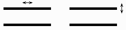
Рис. 2.2.4. Варианты работы электростатического утилизатора энергии: слева - за счет изменения площади перекрытия обкладок конденсатора, справа - за счет изменения зазора между обкладками.
Для создания требуемого для работы устройства начального напряжения поляризации, которое в некоторых случаях может составлять десятки и даже сотни вольт, необходим внешний источник, в качестве которого, в частности, можно использовать электреты, сохраняющие заряд продолжительное время. Отличительные особенности утилизаторов данного типа - достаточно высокое выходное напряжение, высокое внутреннее сопротивление, низкий выходной ток. Электростатические утилизаторы могут быть реализованы методами МЭМС-технологий, т. к. технология производства конденсаторов таким образом достаточно хорошо отработана.
В основе работы электромагнитных утилизаторов лежит закон электромагнитной индукции Фарадея [25, 34] - возбуждение электродвижущей силы (ЭДС) E в контуре при изменении во времени t магнитного потока F, пересекающего площадь контура:
В соответствии с этой формулой выходная энергия определяется как величиной магнитного потока, так и временем, в течение которого магнитный поток претерпевает изменения. Поэтому электромагнитные утилизаторы лучше работают на более высоких частотах, нежели пьезоэлектрические и электростатические, и хуже поддаются миниатюризации [4]. По конструкции они, как правило, состоят из постоянного магнита, создающего высокоградиентное магнитное поле и катушки, которая совершает относительное движение в этом поле [6, 22, 23]. Некоторые схемы электромагнитных утилизаторов показаны на рис. 2.2.5 - 2.2.7.
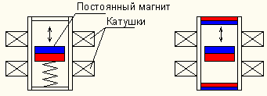
Рис. 2.2.5. Электромагнитный утилизатор энергии на основе подвижного постоянного магнита, выполняющего роль инерционной массы, и пары встречно-последовательно включенных катушек (также может использоваться только одна катушка). Возвратная пружина обеспечивает резонансный характер работы утилизатора. В качестве нее может использоваться магнитная пружина (один или два постоянных магниты, установленных на концах утилизатора, с противоположным направлением намагниченности по отношению к подвижному магниту).
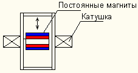
Рис. 2.2.6. Электромагнитный утилизатор энергии на основе подвижной пары постоянных магнитов, обращенных друг к другу одноименными полюсами, и катушки. В схеме может использоваться механическая или магнитная возвратная пружина.
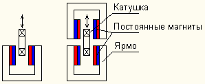
Рис. 2.2.7. Электромагнитный утилизатор энергии на основе одной или двух пар постоянных магнитов, соединенных стальным ярмом, и подвижной и катушки. В схеме может использоваться механическая возвратная пружина.
В качестве электромагнитного утилизатора энергии может, в частности, рассматриваться магнитоэлектрический преобразователь [14], состоящий из постоянного магнита и дифференциального соленоида (схема аналогична рис. 2.2.5). Для повышения эффективности преобразования энергии относительного движения катушки в электрическую необходимо использовать как можно более высокоэнергетические постоянные магниты [27], например, состава Nd-Fe-B (неодим-железо-бор) при работе до температуры 120 0C, а для более высоких температур до 250 0C - Sm-Co (самарий-кобальт) [6]. Роль возвратной пружины могут выполнять неподвижные постоянные магниты, установленные в противоположной ориентации по отношению к подвижному магниту, работая на его отталкивание (магнитная пружина). При использовании магнитной пружины для уменьшения резонансной частоты предпочтительнее использовать дополнительную немагнитную массу, прикрепленную к подвижному магниту [9]. Электромагнитные утилизаторы, в принципе, могут быть изготовлены методами МЭМС-технологий, но параметры при этом будут невысокими вследствие низкой остаточной индукции плоского микромагнита и малого количества витков планарной обмотки. Невысокое выходное переменное напряжение (десятки, сотни милливольт) проблематично преобразовать в постоянное без существенных потерь. В данном случае может понадобиться выпрямитель или преобразователь AC-DC (преобразователь переменного напряжения в постоянное) с низким падением напряжения на основе полевых транзисторов с изолированным затвором (MOSFET). Электромагнитные утилизаторы могут использоваться, например, как датчики давления в шинах автомобилей [10, 11].
Для повышения эффективности и расширения частотного диапазона возможно объединение пьезоэлектрического и электромагнитного преобразователя в одном утилизаторе гибридного типа [4].
2.3. Утилизаторы энергии механических колебаний низкой частоты
Помимо утилизаторов энергии вибрационного типа (п. 2.2), работающих в области достаточно высоких частот (десятки - сотни герц), могут использоваться утилизаторы механических колебаний в диапазоне низких частот (единицы герц), основанные на принципе линейного или кругового движения. Подобное устройство для подзавода карманных часов было запатентовано еще в 18 веке, а в двадцатом веке были широко распространены механические наручные часы с самоподзаводом на основе вращающейся инерционной массы. Возможность применения устройств самоподзавода для механических часов определялась, в частности, их невысоким энергопотреблением (единицы микроватт). В качестве преобразователя кинетической энергии низкочастотных колебаний в электрическую может использоваться линейный электрогенератор [32], схема которого показана на рис. 2.3.1, или генератор вращательного (колебательного) типа на низкую частоту. Данный тип утилизаторов, в частности, хорошо подходит для преобразования энергии морских волн в электрическую энергию либо в целях энергоснабжения, либо для питания различных буев (рис. 2.3.2).
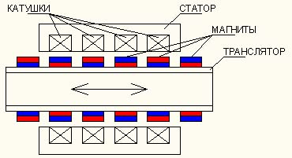
Рис. 2.3.1. Конструкция линейного электрогенератора с транслятором на постоянных магнитах (ПМ).
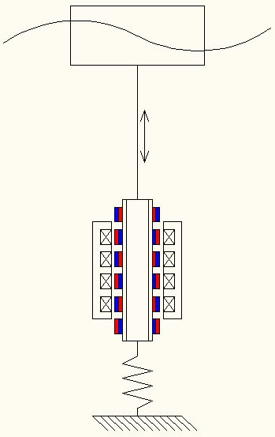
Рис. 2.3.2. Схема сопряжения линейного электрогенератора с транслятором на ПМ с морским буем. Транслятор электрогенератора крепится с одной стороны с помощью троса к поплавку буя, создающему подъемную силу, а с другой стороны - к морскому дну с помощью пружины, обеспечивающей возвратное движение.
Еще один вариант конструкции утилизатора энергии низкочастотных колебаний - устройство в виде флага из лент с нанесенными на них слоями пьезоэлектрического материала [19]. Под действием водного или воздушного потока ленты совершают поперечно-продольные колебания, энергия которых посредством пьезоэлектрических слоев преобразуются в электрическую энергию.
2.4. Утилизаторы энергии движения воздушных масс
Мощность ветра P может быть вычислена по формуле [16]:
где r - плотность воздуха (1.22 кг/м3 в при нормальных условиях), A - площадь поперечного сечения потока, v - скорость ветра. Максимальная эффективность мощного ветрогенератора может достигать 40 %, а в среднем составляет 20 %.
Ветрогенераторы достаточно большой мощности (десятки, сотни и более ватт) состоят из трех основных частей - опорная башня, лопасти и электрогенератор. По конструкции они делятся на два класса - с горизонтальной осью вращения и с вертикальной. Радиальные или аксиальные электрогенераторы вращательного типа [28 - 30] служат для преобразования кинетической энергии вращения лопастей в электрическую. Для увеличения срока службы и максимального снижения расходов на обслуживание в электрогенераторах применяются роторы на постоянных магнитах [1, 28 - 30], предпочтительно имеющих высокие значения удельной энергии [27]. Также как и утилизаторы энергии на солнечных батареях, ветрогенераторы являются масштабируемыми и сравнительно простыми по конструкции системы в целом, что особенно важно при большой мощности генерации. В ряде случаев экономически выгодным является объединение ветрогенераторов с солнечными батареями, так как солнечные дни часто чередуются с пасмурными ветреными днями, кроме того, ветрогенератор при наличии ветра может работать и по ночам.
Питание устройств микроваттного уровня возможно от малоразмерных ветрогенераторов, изготовленных с использованием методов МЭМС-технологий. Например, ветрогенератор, имеющий габариты 18 х 18 х 9 мм3 с турбиной диаметром 12 мм позволяет получать выходную мощность 1 мВт при перепаде давлений 8 мбар и расходе воздуха 35 л/мин [12].
Для преобразования энергии движущегося воздуха в электрическую также могут использоваться совершающие низкочастотные колебания под действием ветра флаги с нанесенными на них пьезоэлектрическими слоями (см. п. 2.3) или безлопастные ветрогенераторы - вертикально установленные слегка расширяющиеся кверху цилиндры, способные качаться на резонансной частоте под действием образующихся позади них вихрей ветра (дорожка Кармана) и вырабатывающие электроэнергию с помощью вмонтированных в них линейных электрогенераторов [32].
2.5. Утилизаторы энергии электромагнитных колебаний
Электромагнитные колебания различных частот имеют повсеместное распространение, например, поля рассеяния линий электропередач, теле- и радиосигналы, сигналы сотовой связи, сигналы беспроводных сетей [8]. Частотные диапазоны линий электропередач составляют 50 ... 60 Гц, радиосвязи - 10 кГц ... 30 МГц и выше, телевещания - 50 ... 500 МГц. Сотовая связь и беспроводные сети используют частоты примерно 400 МГц, 900 МГц, 1800 МГц, 2.4 ГГц. В области высоких частот предпочтительным является диапазон 500 МГц ... 10 ГГц, в котором работает множество различных радиокоммуникационных устройств. Уровень сигнала падает пропорционально квадрату расстояния от источника. Уровень мощности в точке приема P можно оценить в соответствии с формулой:
где P0 - мощность источника, l - длина волны источника, R - расстояние от источника до точки приема. Так, при использовании передатчика нелицензируемого диапазона 2.4 ... 2.485 ГГц разрешенной максимальной мощностью 1 Вт уровень мощности на расстоянии 5 м не превысит 50 мкВт [16]. В действительности принимаемая мощность, как правило, оказывается существенно меньше.
Принцип действия данного типа утилизаторов - преобразование энергии электромагнитных колебаний в электрическую. Например, электронные метки или смарт-карты являются пассивными приемниками энергии расположенного поблизости излучателя радиоволн [16]. В качестве другого примера можно привести размещаемые вблизи силовых кабелей и линий электропередач низкой (50 ... 60 Гц) частоты электромагнитные катушки (магнитная связь). Одним из вариантов такого размещения может быть надетая на провод с переменным током разъемная для удобства установки тороидальная катушка. В соответствии с законом электромагнитной индукции Фарадея [25, 34]:
напряжение на выходе приемной катушки определяется следующими факторами: частота и сила переменного тока первичного источника, площадь и число витков приемной катушки. Напряженность магнитного поля быстро убывает с увеличением расстояния от источника (для длинных прямых линий прямо пропорционально расстоянию, для коротких - гораздо быстрее [25]).
При построении утилизаторов энергии электромагнитных колебаний высоковольтных источников может использоваться принцип емкостной (электрической) связи [15, 24]. Ток смещения, генерируемый переменным электрическим полем, используется для зарядки конденсатора, напряжение с которого подается на выпрямитель (AC-DC) и преобразователь DC-DC. Плотность энергии электрического поля wE задается формулой:
и составляет, к примеру, 4.425 ∙ 10-4 Дж/м3 при напряженности электрического поля 10 кВ/м, которая может наблюдаться на расстоянии 1 м от Земли для 400-киловольтного провода [24]. Напряжение и частота линий электропередач поддерживаются с высокой точностью, поэтому и создаваемое ими электрическое поле является высокостабильным. Возможная схема построения утилизатора энергии электромагнитных колебаний высоковольтной линии показана на рис. 2.5.1 [15]. К высоковольтному проводнику напрямую подключается верхняя обкладка конденсатора C1, являющаяся составной частью утилизатора, нижняя обкладка при этом имеет емкость C2 относительно Земли. В результате получается конденсаторный делитель высоковольтного напряжения. Напряжение с конденсатора C1 подается на входной выпрямитель утилизатора, далее на накопитель на конденсаторе C и преобразователь DC-DC, а с него поступает в нагрузку Rн. При необходимости снижения входного напряжения на входе выпрямителя ставится резисторный делитель напряжения. Следствием малых величин емкостей C1 и C2 является высокий импеданс источника энергии и невысокая нагрузочная способность утилизатора.
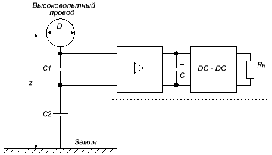
Рис. 2.5.1. Схема построения утилизатора энергии электромагнитных колебаний высоковольтной линии электропередач. Напряжение с конденсатора C1 подается на выпрямитель (преобразователь AC-AC), далее поступает на накопительный конденсатор C и через преобразователь DC-DC подается в нагрузку Rн.
Если конденсатор C1 состоит из квадратных обкладок со стороной a, разделенных расстоянием d, то величины емкостей C1 и C2 могут быть рассчитаны по формулам [15]:
где e - диэлектрическая проницаемость вещества между обкладками конденсатора C1, D - диаметр высоковольтного проводника, z - его расстояние от Земли. Тогда напряжение на конденсаторе C1:
где VAC - напряжение на высоковольтном проводе относительно Земли.
Подобные утилизаторы удобно использовать для питания устройств, контролирующих состояние высоковольтных распределительных сетей и подстанций [15, 24].
Для утилизации энергии высокочастотной части электромагнитного спектра могут использоваться ректенны, состоящие из антенны в качестве приемника радиоволн и детектора, осуществляющего преобразование переменного высокочастотного напряжения в постоянное. Следует иметь в виду, что уровни энергии, доступные для практического применения, наблюдаются в основном вблизи радиопередающих устройств достаточно большой мощности.
На рис. 2.5.2 и 2.5.3 показаны схемы ректенн с высокочастотными выпрямителями с диодами Шоттки. Схема с параллельным подключением выпрямительного диода и нагрузки (рис. 2.5.3) предпочтительнее, т. к. позволяет получать более высокое выходное напряжение [18].
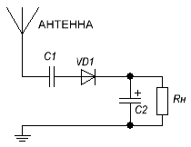
Рис. 2.5.2. Схема электрическая принципиальная выпрямителя высокочастотного сигнала с последовательным подключением выпрямительного диода и нагрузки: VD1 - диод с низким падением напряжения (диод Шоттки), C3 - накопительный конденсатор, RH - сопротивление нагрузки.
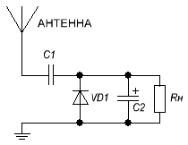
Рис. 2.5.3. Схема электрическая принципиальная выпрямителя высокочастотного сигнала с параллельным подключением выпрямительного диода и нагрузки: VD1 - диод с низким падением напряжения (диод Шоттки), C3 - накопительный конденсатор, RH - сопротивление нагрузки.
На рис. 2.5.4 приведена схема удвоителя напряжения на диодах Шоттки. С помощью конденсатора C1 входной контур настраивается на заданную частоту входного сигнала. На рис. 2.5.5 изображена схема удвоителя напряжения на полевых транзисторах.
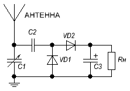
Рис. 2.5.4. Схема электрическая принципиальная выпрямителя высокочастотного сигнала с удвоением напряжения: Диоды VD1, VD4 предпочтительнее с низким падением напряжения (диоды Шоттки), C1 - подстроечный конденсатор, C3 - накопительный конденсатор, RН - сопротивление нагрузки.
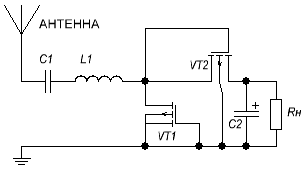
Рис. 2.5.5. Схема электрическая принципиальная выпрямителя высокочастотного сигнала с удвоением напряжения на полевых транзисторах: C1L1 - согласующая цепь, настроенная на частоту сигнала, C2 - накопительный конденсатор, RН - сопротивление нагрузки.
Длина волны диапазона 2.4 ГГц составляет 125 мм, соответственно длина полуволновой антенны будет равна примерно 62 мм, а четветьволновой - 31 мм, что может оказаться неприемлемым для малогабаритного устройства. Для уменьшения размеров возможно использование антенны усложненной конструкции [18], эскиз которой показан на рис. 2.5.6.
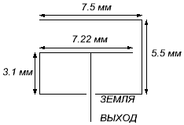
Рис. 2.5.6. Поперечное сечение антенны на диапазон 2.4 ... 2.5 ГГц: межслойное заполнение изоляционным материалом с диэлектрической проницаемостью 11.7.
Для повышения эффективности подобные ректенны (антенна с выпрямительным диодом) могут комбинироваться в массивы с последовательным или параллельным соединением (рис. 2.5.7).
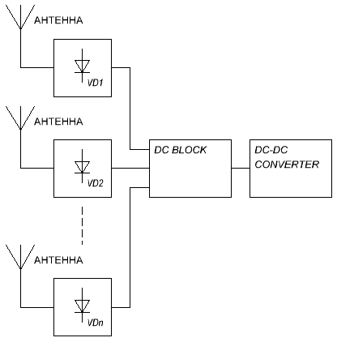
Рис. 2.5.7. Массив ректенн (антенны с выпрямительными диодами Шоттки). DC BLOCK - сумматор выпрямленных напряжений, DC-DC CONVERTER - преобразователь полученного напряжения в выходное.
Чтобы увеличить выходное напряжение с сотен милливольт до единиц вольт, можно использовать умножитель напряжения по схеме Диксона, схема которого приведена на рис. 2.5.8.
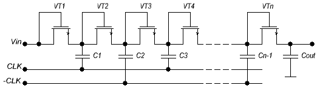
Рис. 2.5.8. Схема электрическая принципиальная умножителя напряжения по схеме Диксона: MOSFET-транзисторы используются в диодном включении, n-1 каскадов, умножение на n.
2.6. Утилизаторы тепловой энергии
Принцип работы данного типа утилизаторов - преобразование тепловой энергии в электрическую. Источники тепловой энергии распространены повсеместно: нагревающиеся детали транспортных средств, трубы и радиаторы отопления, геотермальные подземные источники, системы охлаждения на промышленных предприятиях, водные массивы с градиентом температур, человеческое тело. Термоэлектрический генератор работает за счет разности температур и является, по сути, тепловой машиной, хотя и без движущихся частей, в которой роль рабочего тела выполняют электрические заряды. Плотность тепловой энергии может составлять порядка 60 мкВт/см2 при разности температур в 5 0C [5]. Эффективность преобразования определяется теоремой Карно [34]:
где TH - температура нагревателя, TC - температура холодильника. При комнатной температуре (20 0C) эффективность может достигать 1.6 % при разности температур нагревателя и холодильника 5 0C и 3.3 % при разности температур 10 0C [16].
В основе взаимного преобразования тепловой и электрической энергии лежат термоэлектрические эффекты, которые включают в себя эффект Зеебека, эффект Пелтье и эффект Томсона [34].
Эффект Зеебека – возникновение термоЭДС ET в замкнутой электрической цепи, составленной из последовательно соединенных разнородных проводников (полупроводников), при разнице температур DT мест их контактов:
где a – удельная термоЭДС, a12 – удельная дифференциальная термоЭДС, T – температура, L – замкнутый контур, dl – элемент этого контура.
Эффект Пельтье (обратный эффекту Зеебека) – выделение или поглощение в спае разнородных проводников (полупроводников) теплоты QP, избыточной над джоулевой теплотой, при прохождении постоянного электрического тока I:
где P12 – коэффициент Пельтье, t – время.
Эффект Томсона – выделение или поглощение теплоты QT, избыточной над джоулевой, при прохождении постоянного электрического тока I через неравномерно нагретый проводник (полупроводник):
где t – коэффициент Томсона, DT – разница температур.
Непосредственного практического применения эффект Томсона пока не имеет, но может оказывать существенное влияние на работу устройств, использующих другие термоэлектрические эффекты.
Термоэлектрические коэффициенты связаны между собой соотношениями Кельвина:
В утилизаторах тепловой энергии используется эффект Зеебека. Основой термоэлектрического генератора служит термоэлемент, составленный из двух разнородных токопроводящих материалов, в качестве которых, как правило, выбираются соединенные медной или алюминиевой шиной полупроводники p- и n- типа, так как они обладают наибольшей удельной термоЭДС (рис. 2.6.1):
где a12 – удельная дифференциальная термоЭДС, DT - разница температур горячего и холодного спая.
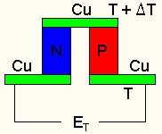
Рис. 2.6.1. Схема термоэлемента на основе полупроводников p- и n- типа, соединенных медной шиной (Cu). Спаи полупроводников находятся при разных температурах (T и T + DT). На выводах термоэлемента генерируется термоЭДС ET.
Напряжение V на нагрузке RН:
где RIN – внутреннее сопротивление термогенератора.
Ток I через нагрузку:
Мощность P в нагрузке:
достигает максимума PMAX при RH = RIN:
Видно, что выходная мощность термоэлемента в идеальном случае пропорциональна квадрату разницы температур холодного и горячего спаев. Эффективность преобразования тепловой энергии в электрическую составляет примерно 5 % при разности температур спаев 100 0C и может достигать почти 20 % при разности температур 800 0C. Для каждого диапазона рабочих температур необходим подбор термоэлементов на основе материалов, обеспечивающих наибольшую эффективность и термоЭДС.
Для повышения выходного напряжения отдельные термоэлементы составляются в батареи (рис. 2.6.2).
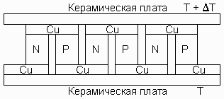
Рис. 2.6.2. Схема термоэлектрической батареи. Термоэлементы на основе полупроводников p- и n- типа последовательно соединены медными шинами (Cu) и заключены между керамическими платами, которые находятся при разных температурах (T и T + DT).
Утилизаторы тепловой энергии могут применяться, например, в наручных часах и медицинских имплантах, преобразуя тепловую энергию человеческого тела в электрическую, а также в тепловых машинах, обеспечивая питанием работу управляющие электроники. Оценка максимального уровня генерации электрической энергии утилизаторами, использующими тепло человеческого тела, составляет 2.4 ... 4.8 Вт в расчете на всю поверхность тела [7].
2.7. Утилизаторы рассеянной энергии гибридного (смешанного) типа
Возможно объединение утилизаторов энергии, работающих на разных принципах, в одно устройство [4]:
Гибридизация позволяет диверсифицировать источники доступной для утилизатора рассеянной энергии и увеличить объем ее использования.
3. Примеры построения, электронные компоненты, запасание энергии
Уровни генерируемой энергии из окружающей среды в расчете на единицу объема утилизатора примерно следующие [5]: солнечный свет вне помещения 15000 мкВт/см3, солнечный и искусственный свет в помещении 30 мкВт/см3, утилизаторы вибрационного типа 100 ... 300 мкВт/см3, термоэлектрические утилизаторы 40 мкВт/см3, утилизаторы энергии акустического шума 1 мкВт/см3.
Для согласования электромагнитного утилизатора энергии колебательного (вибрационного типа) с накопителем энергии (батарея или суперконденсатор) в простейших случаях могут использоваться схемы с повышающим трансформатором (рис. 3.1) или умножителем напряжения (рис. 3.2), хотя они и не обеспечивают согласования нагрузки с утилизатором и, соответственно, условия передачи максимальной мощности.
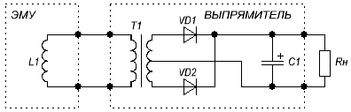
Рис. 3.1. Схема электрическая принципиальная двухполупериодного выпрямителя с повышающим трансформатором T1 для электромагнитного утилизатора энергии (ЭМУ): C1 - накопительный конденсатор (суперконденсатор), RН - сопротивление нагрузки, диоды VD1, VD2 предпочтительнее с низким падением напряжения (диоды Шоттки).
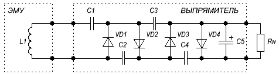
Рис. 3.2. Схема электрическая принципиальная выпрямителя с умножением напряжения (учетверение) для электромагнитного утилизатора энергии (ЭМУ): C5 - накопительный конденсатор (суперконденсатор), RН - сопротивление нагрузки, диоды VD1 - VD4 предпочтительнее с низким падением напряжения (диоды Шоттки).
С целью снижения падения напряжений и, соответственно, потерь в качестве выпрямляющих вентилей могут использоваться полевые транзисторы, управляемые внешним генератором. Одновременно они могут служить в качестве ключей в двухполярном повышающем преобразователе (рис. 3.3).
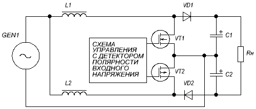
Рис. 3.3. Схема электрическая принципиальная выпрямителя на MOSFET-транзисторах с повышением напряжения: C1, C2 - накопительные конденсаторы, RН - сопротивление нагрузки.
При построении электронных схем утилизаторов энергии могут использоваться специализированные микросхемы, например,.BQ25504, LTC3588-1, AEM40940.
Параметры микросхемы для утилизаторов энергии BQ25504: входное напряжение от 80 мВ, холодный пуск при входном напряжении 330 мВ, ток покоя менее 330 нА, возможность подстройки для отбора максимальной мощности от источника. Может использоваться совместно с солнечными батареями (рис. 3.4), термоэлектрические преобразователями (рис. 3.5).
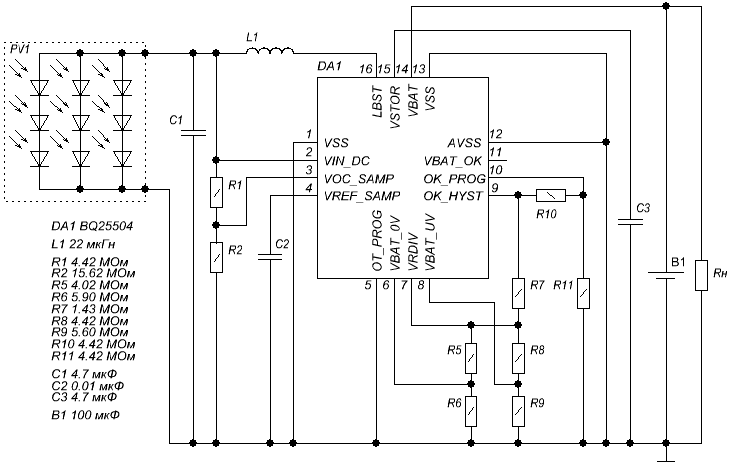
Рис. 3.4. Схема электрическая принципиальная утилизатора энергии солнечной батареи на микросхеме BQ25504: C3 - накопительный конденсатор, RН - сопротивление нагрузки.
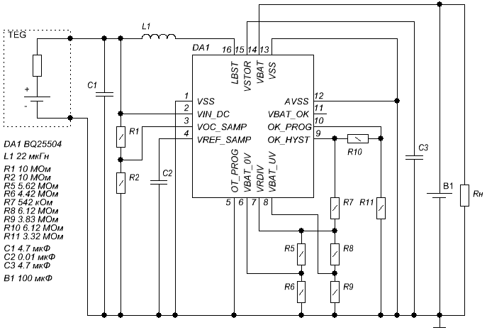
Рис. 3.5. Схема электрическая принципиальная утилизатора энергии термоэлемента на микросхеме BQ25504: C3 - накопительный конденсатор, RН - сопротивление нагрузки.
Микросхема LTC3588-1 имеет следующие параметры: ток покоя в разных режимах 450 ... 950 нА, входное напряжение 2.7 ... 20 В, выходное напряжение можно устанавливать аппаратно - 1.8, 2.5, 3.3, 3.6 В коммутацией входов D0, D1. Области применения: пьезоэлектрические и электромагнитные утилизаторы (рис. 3.6, 3.7), утилизаторы энергии солнечных батарей (рис. 3.8) и термоэлементов (рис. 3.9), утилизаторы энергии электрических сетей и полей (рис. 3.10, 3.11).
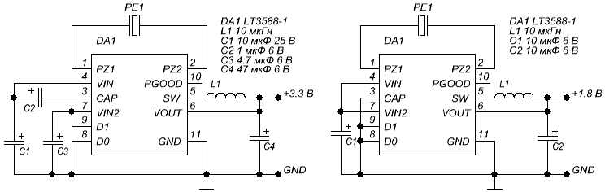
Рис. 3.6. Схема электрическая принципиальная утилизатора энергии пьезоэлектрического элемента на микросхеме LT3588-1 в разных конфигурациях.
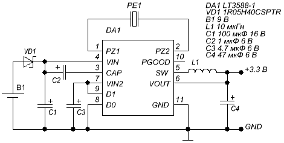
Рис. 3.7. Схема электрическая принципиальная утилизатора энергии пьезоэлектрического элемента на микросхеме LT3588-1 с резервной батареей.
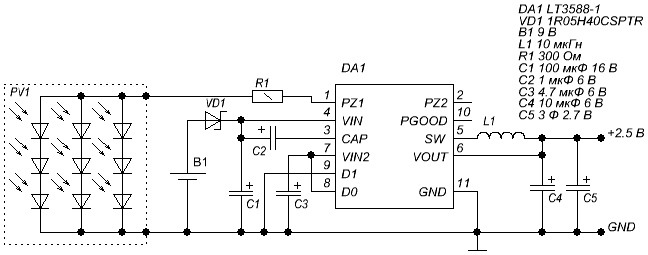
Рис. 3.8. Схема электрическая принципиальная утилизатора энергии солнечной батареи на микросхеме LT3588-1 с резервной батареей: C5 - суперконденсатор.
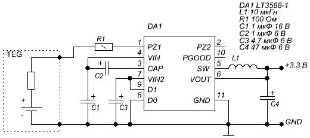
Рис. 3.9. Схема электрическая принципиальная утилизатора энергии термоэлемента на микросхеме LT3588-1.
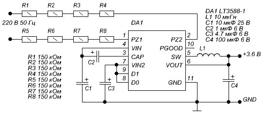
Рис. 3.10. Схема электрическая принципиальная утилизатора энергии сети переменного тока на микросхеме LT3588-1.
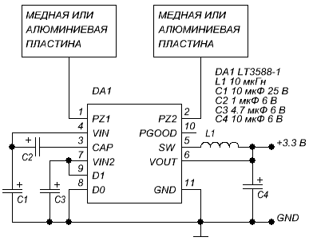
Рис. 3.11. Схема электрическая принципиальная утилизатора энергии переменного электрического поля на микросхеме LT3588-1.
Для построения утилизаторов энергии высокочастотных электромагнитных колебаний может быть применена микросхема AEM40940 (рис. 3.12). Ее параметры: уровни входной энергии -18.5 ... 10 дБм с возможностью холодного запуска, входное напряжение 50 мВ ... 2.5 В, имеет два выхода с низким и высоким выходным напряжением, выходные напряжения можно независимо устанавливать в диапазонах 1.2 ... 1.8 В и 1.8 ... 3.3 В, соответственно, коммутацией входов CFG[0], CFG[1], CFG[2], ток покоя на уровне 500 нА.
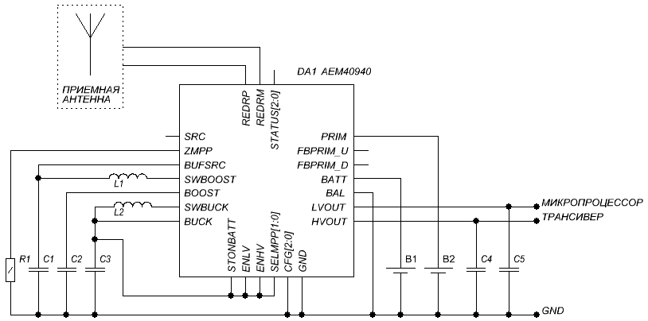
Рис. 3.12. Схема электрическая принципиальная утилизатора энергии высокочастотных электромагнитных колебаний на микросхеме AEM40940: B1 - основная батарея, B2 - резервная батарея.
Узлы беспроводных сетей часто строятся на основе микроконтроллера MSP430 (ток потребления может быть установлен менее 1 мкА, имеются различные спящие режимы). Запасать собранную энергию можно либо в аккумуляторах, либо в суперконденсаторах, либо в обычных конденсаторах достаточной емкости. У батареи уровень напряжения при заряде-разряде изменяется не сильно, так что нагрузку можно питать от батареи напрямую, а у конденсаторов и суперконденсаторов значительно, в этом случае может понадобиться преобразователь постоянного напряжения в постоянное (DC-DC), способный поддерживать на выходе заданный уровень напряжения. Преобразователи DC-DC желательно использовать импульсного типа, чтобы улучшить эффективность преобразования энергии.
Перспективным может оказаться модульный принцип построения системы сбора рассеянной энергии с использованием нескольких типов утилизаторов энергии. При преобладании какого-либо вида рассеянной энергии в данном месте могут использоваться несколько модулей одного типа. Скажем, при преобладании ветровой энергии могут быть подключены два и более ветровых модуля.
4. Заключение
Так как прогресс в улучшении параметров химических источников питания продолжается, то вряд ли утилизаторы энергии смогут их полностью вытеснить, но тем не менее они вполне могут занимать свою нишу до тех пор, пока не будет создан иной источник энергии широкого применения с соответствующей продолжительностью работы (десятки лет).
Если немного пофантазировать, то утилизаторы рассеянной энергии могут играть ключевую роль в постановке и решении абстрактной идеализированной задачи создания системы неких автономных самоподдерживающихся взаимодействующих друг с другом устройств (параллельный техномир роботов [31]), функционирующих может быть даже и бесцельно десятки - сотни - тысячи лет в автономном режиме без планомерного обслуживания и собирающих для своей работы энергию окружающей среды, переходящих при неблагоприятных внешних условиях на произвольно долгое время (годы - десятилетия - столетия) в спящий режим (режим споры, как бактерия) и оживающих в доброжелательной обстановке. Т. е. речь идет о некоей параллельной техноцивилизации, которая при катастрофическом стечении обстоятельств может пережить человеческую цивилизацию и стать памятником ей [26]. А в качестве ретроспективной идеи можно рассмотреть и существующий земной мир как некий мемориал - наследие предшествующей цивилизации неизвестной природы.
Ссылки:
06.08.2021
Альтернативные источники энергии
Компьютеры и
Интернет
Магнитные поля
Механотронные системы
Перспективные
разработки
Электроника и
технология